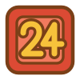
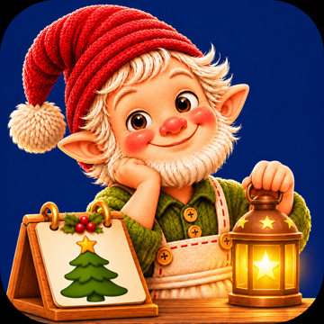
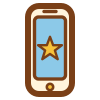

24 Türchen und eine Überraschung
Vom 1. bis zum 24. Dezember wartet jeden Tag ein neues Abenteuer, am 25. Dezember eine Überraschung.

Der interaktive Adventskalender für Kinder
Wichtel Kalino lädt Kinder ein, gemeinsam den Advent zu erleben. Hinter jedem der 24 Türchen wartet ein kleines Abenteuer zum Mitmachen: Frost wegwischen, den Weihnachtsbaum schmücken, Plätzchen ausstechen und verzieren, ein Vogelhaus bauen oder einen Brief an den Weihnachtsmann malen. Mit jedem Türchen verändert sich Kalinos Stube und wird ein Stück gemütlicher. Am Ende wartet eine Überraschung.
Kinder tippen, wischen und ziehen. Bei jeder Aufgabe hilft ein Hinweis in Bildern und Text, und funkelnde Schneekugeln zeigen als Meilensteine, was schon geschafft ist. Die App ist für Kinder im Vorschulalter um 5 Jahre gedacht.

Vom 1. bis zum 24. Dezember wartet jeden Tag ein neues Abenteuer, am 25. Dezember eine Überraschung.
Jede Aufgabe wird in Bildern und kurzem Text erklärt. Kleine Animationen zeigen, wie getippt, gewischt oder gezogen wird.
Nach einigen Türchen funkelt eine Schneekugel. Sie zeigt dem Kind, wie weit es schon gekommen ist. Am Ende gibt es einen Rückblick auf alles Erlebte.
Echter Adventskalender, jeden Tag ein neues Türchen oder freies Spielen im eigenen Tempo.
Einstellungen, Sprache, Spielmodus und Fortschritt sind hinter einer Rechenaufgabe für Erwachsene.
Weihnachtliche Hintergrundmusik, die sich im Elternbereich leiser stellen oder abschalten lässt.
Deutsch, Englisch, Französisch, Spanisch, Niederländisch, Portugiesisch, Italienisch, Polnisch, Dänisch, Schwedisch und Norwegisch. Gewechselt wird im Elternbereich.
Geschaffte Türchen bekommen einen Haken. Im Elternbereich sehen Erwachsene den Fortschritt und können den Kalender zurücksetzen.

Mit iOS 16.4 oder neuer.
Mit iPadOS 16.4 oder neuer.
Die App läuft im Querformat. Drehe dein Gerät quer, dann kann es losgehen.
Kalino gibt es in elf Sprachen. Die Sprache lässt sich im Elternbereich wechseln.